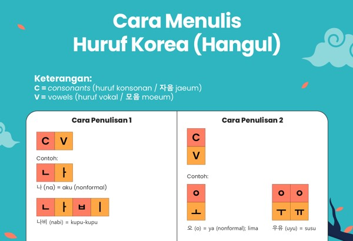
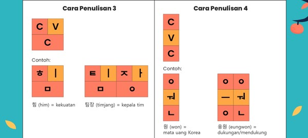
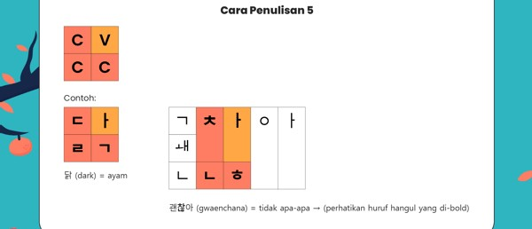

• Dalam hangul, terdapat lima cara penulisan supaya huruf-huruf hangul bisa menjadi satu kesatuan kata atau kalimat. Kamu bisa perhatikan cara penulisannya pada infografik berikut :



• Jadi, ingat ya! Menulis huruf hangul itu ada lima cara, bisa ditulis ke samping, ke bawah, maupun kombinasi keduanya, tergantung kata atau kalimatnya. Kamu harus hafal huruf vokal apa saja yang ditulis ke samping dan huruf vokal apa saja yang ditulis ke bawah. Tadi sudah kita bahas, kok! Kalau lupa, bisa scroll lagi ke atas, ya!
• Demikian, pembahasan panjang kita tentang huruf Korea atau hangul, mulai dari macam-macam huruf, cara membaca atau pelafalan, hingga cara menulisnya. Mungkin awalnya terasa berat karena hurufnya ada banyak, tapi kalau kamu rajin berlatih akan terasa mudah, kok!
Untuk lebih Jelas bisa kesini ya : Check it out guys!
Nama : Indah Tarimah Siregar
NIM : 11200251000110
Kelas : 5-D IPI
Dosen Pengampu : Muhammad Azwar S.Pd.I,M.Hum.